A complete, exam-focused study of errors in indicating instruments — from static and dynamic characteristics to errors in PMMC, Moving Iron, and Electrodynamometer instruments. Built for GATE EE, ESE, and PSU aspirants.
Every measuring instrument is an imperfect window into the physical world. When you connect a voltmeter, it draws a small current that slightly changes the very voltage you are measuring. When you read a scale, your eye angle introduces a small deviation. When temperature rises, spring constants drift. These are not manufacturing failures — they are fundamental physical realities that every measurement engineer must understand and manage.[1]
Imagine trying to measure the air pressure in a car tyre with a gauge. The moment you attach the gauge, some air escapes — the act of measurement itself changes what you are measuring. All instruments share this fundamental dilemma to varying degrees.
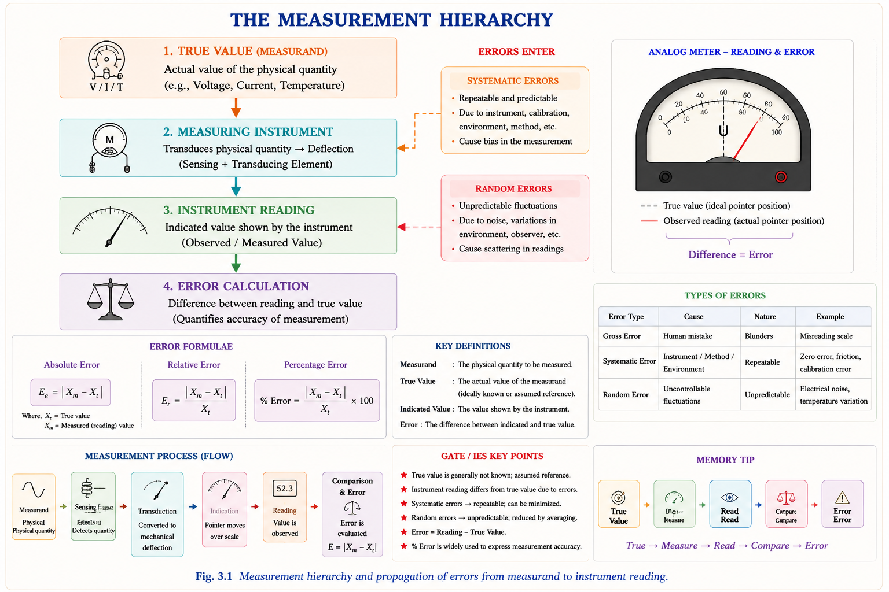
Before studying specific instrument errors, we must be precise about terminology. These terms are often confused but have distinct engineering meanings.[2]
| Term | Definition | Mathematical Form | GATE Relevance |
|---|---|---|---|
| Absolute Error | Algebraic difference between indicated value and true value | \(e = A_m - A_t\) | Foundation of all error calculations |
| Relative Error | Absolute error expressed as fraction of true value | \(e_r = e/A_t\) | Used for % accuracy specification |
| Accuracy | Closeness of indication to true value; complement of error | \(\text{Accuracy} = 1 - |e_r|\) | Instrument specification parameter |
| Precision | Repeatability — closeness of repeated readings to each other | Statistical: low standard deviation | Distinct from accuracy — must not confuse |
| Sensitivity | Output response per unit change in input | \(S = \Delta\theta / \Delta Q\) | Scale factor; related to resolution |
| Resolution | Smallest detectable input change | Least-count / full-scale reading | Limited by scale graduation |
| Dead Zone | Largest input change producing no output change | Friction + hysteresis window | Related to threshold; causes dead band |
A dartboard analogy: darts clustered tightly together but far from the bullseye = high precision, low accuracy. Darts scattered around the bullseye = low precision, high accuracy. An instrument can be precise without being accurate, and vice versa. GATE frequently tests this distinction.
Static characteristics describe an instrument's performance when the input is steady or changes very slowly — essentially, the equilibrium behaviour. These are the specifications you find on an instrument's datasheet.[1]
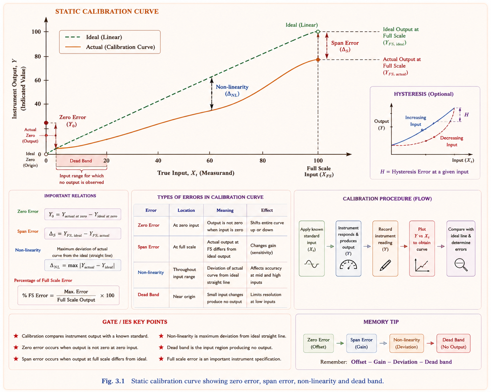
The scale range is the pair of values [Xmin, Xmax] the instrument can measure. The span is the algebraic difference Xmax − Xmin. Full-Scale Deflection (FSD) is the maximum output when the input equals Xmax.[1]
Instrument accuracy is most often quoted as % of FSD (e.g., ±1% FSD). This means the absolute error is constant across the scale, but the relative error is largest at low readings. A 1% FSD instrument reading 10% of full scale has a 10% relative error! Always measure near the upper end of the scale for best relative accuracy.
Sensitivity is the ratio of the change in instrument output to the change in the measured input. For a linear instrument with output \(\theta\) (deflection in degrees) and input \(Q\):[2]
The inverse of sensitivity is the scale factor (or deflection factor). A high sensitivity instrument produces large deflection for small inputs — useful for measuring small quantities but may be easily damaged by overloads.
Instruments are classified by their accuracy grades. The Bureau of Indian Standards (BIS) and IEC classify indicating instruments into accuracy classes based on the permissible error as a percentage of FSD:[3]
| Accuracy Class | Permissible Error (% FSD) | Application | GATE Note |
|---|---|---|---|
| Class 0.1 | ±0.1% | Precision laboratory standards | Reference instruments |
| Class 0.2 | ±0.2% | Secondary standards, precision labs | Sub-standard instruments |
| Class 0.5 | ±0.5% | High-accuracy industrial measurements | Panel instruments in test labs |
| Class 1.0 | ±1.0% | Industrial switchboard instruments | Most common exam reference |
| Class 1.5 | ±1.5% | Commercial measurements | Energy meters, billing |
| Class 2.5 | ±2.5% | Rough industrial measurements | General workshop instruments |
| Class 5.0 | ±5.0% | Approximate indication only | Panel meters in low-accuracy applications |
Hysteresis is the phenomenon where an instrument gives different output values for the same input, depending on whether the input is increasing or decreasing. It arises from mechanical friction in the pivot bearings, magnetic hysteresis in iron cores, and elastic after-effects in the spring.[1]
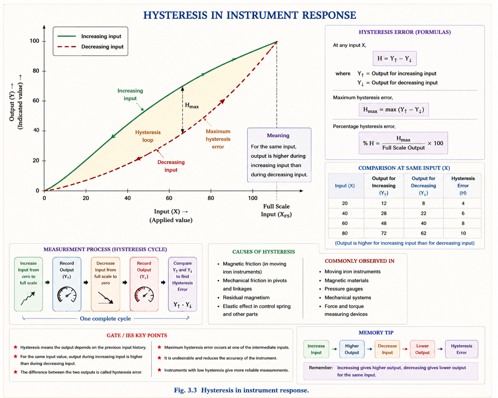
Dynamic characteristics describe instrument behaviour when the measured quantity is changing with time. The moving system of an indicating instrument is essentially a second-order mechanical system — understanding its dynamics is crucial to interpreting transient readings.[2]
Every electromechanical indicating instrument has three fundamental torques acting on its moving system simultaneously. At any instant, Newton's second law for rotation gives:[1]
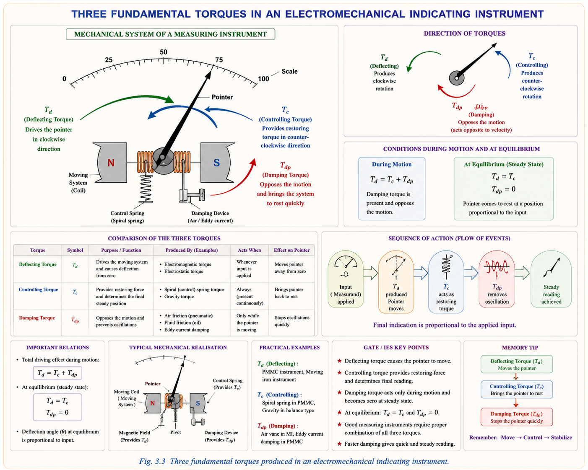
The damping ratio \(\zeta = D / (2\sqrt{JK})\) determines the character of the transient response. Engineers choose damping carefully — too little and the needle oscillates for a long time; too much and it is sluggish.[2]
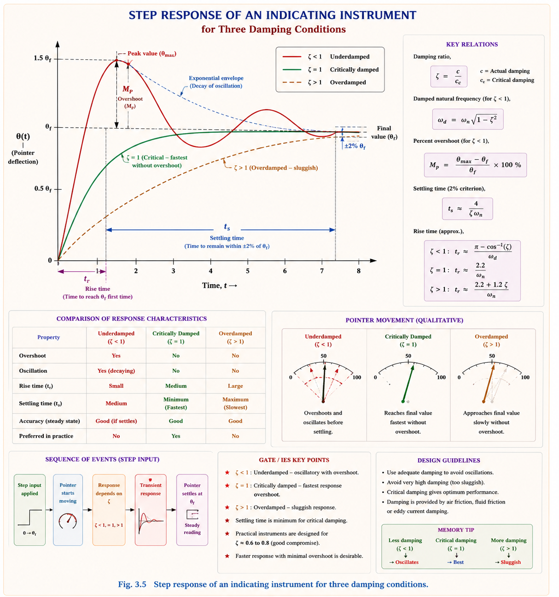
Practical instruments are designed with a damping ratio between 0.6 and 0.8 (slightly underdamped). This gives the fastest response that settles within ±2% of the final value without excessive oscillation. The British Standard specifies that the pointer should reach its final position within the tolerance band in the minimum time — achieved around ζ ≈ 0.65.
Dynamic error is the difference between the true time-varying value and the instrument's indicated value at any instant. It arises because the moving system cannot respond instantaneously due to its inertia. The rise time is the time for the response to go from 10% to 90% of the final value; the settling time is when it stays within ±2% (or ±5%) of the final value.[4]
Errors in electrical measurements are systematically classified into three broad categories. Understanding this hierarchy is the first step to knowing how to eliminate or reduce each type.[3]
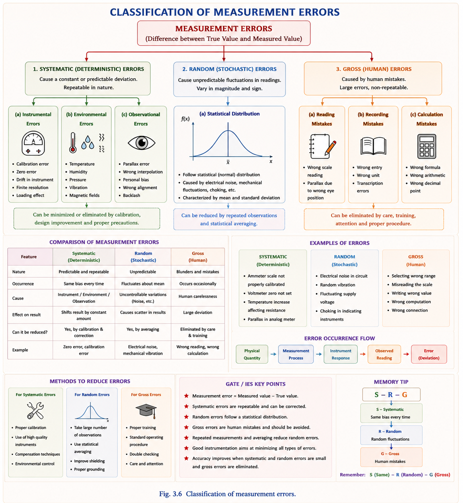
The Permanent Magnet Moving Coil (PMMC) or d'Arsonval type instrument is the most widely used DC measuring instrument. Its operating principle — a current-carrying coil in a permanent magnet field — makes it susceptible to specific categories of errors that differ from AC instruments.[1]
The deflecting torque \(T_d = BANI\) where B = flux density, A = coil area, N = number of turns, I = current. At steady state, \(T_d = T_c\), so \(BANI = K\theta\), giving \(\theta = (BAN/K) \cdot I\). Since B, A, N, K are constants of construction, deflection \(\theta \propto I\) — a perfectly linear scale for DC.
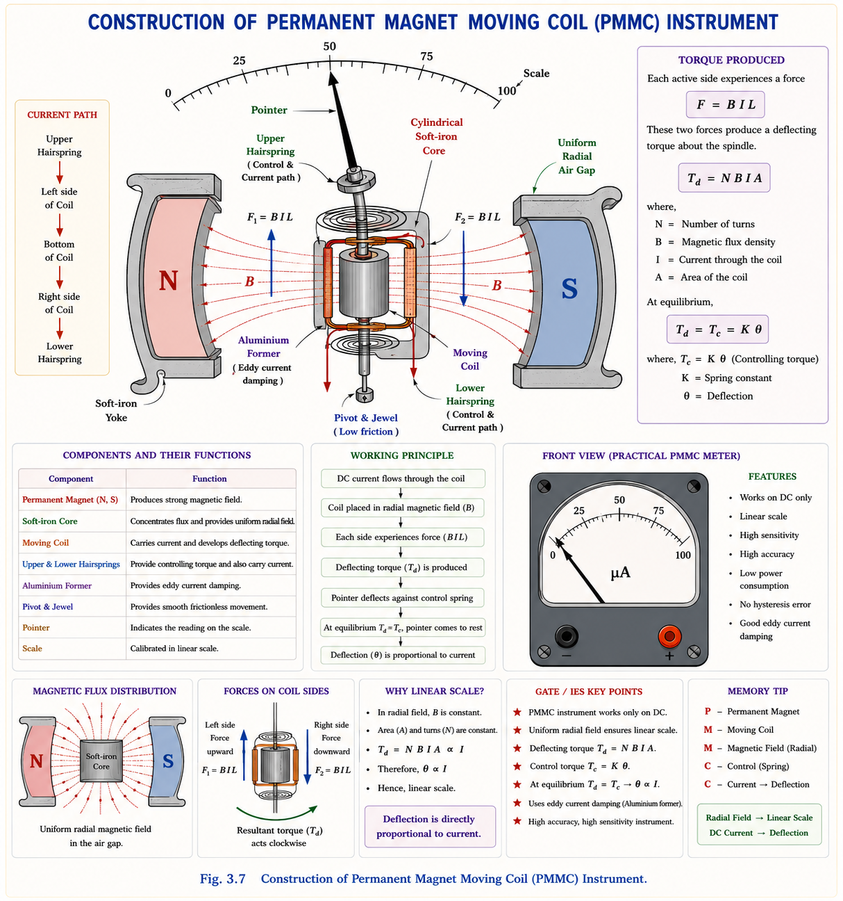
Friction in the pivot bearings and the interaction of the pointer with the scale glass resists deflection. This creates a dead zone — a range of input currents over which no deflection occurs. The instrument will read incorrectly for inputs near this threshold.[1]
Temperature affects PMMC instruments through two independent mechanisms, and these effects partially compensate each other:[1]
| Source | Effect of Temperature Rise | Effect on Reading | Remedy |
|---|---|---|---|
| Spiral springs | Young's modulus decreases → spring weakens → K decreases | Reading increases (overcorrection) | Use Elinvar alloy springs (K nearly constant with temperature) |
| Coil resistance R_c | Resistance increases (copper: +0.4%/°C) → current decreases for fixed voltage source | Reading decreases | Series swamping resistor (Manganin, very low TCR) |
| Permanent magnet | Flux density decreases slightly (−0.02%/°C for Alnico) | Reading decreases | Use temperature-compensated magnets or magnet shunts |
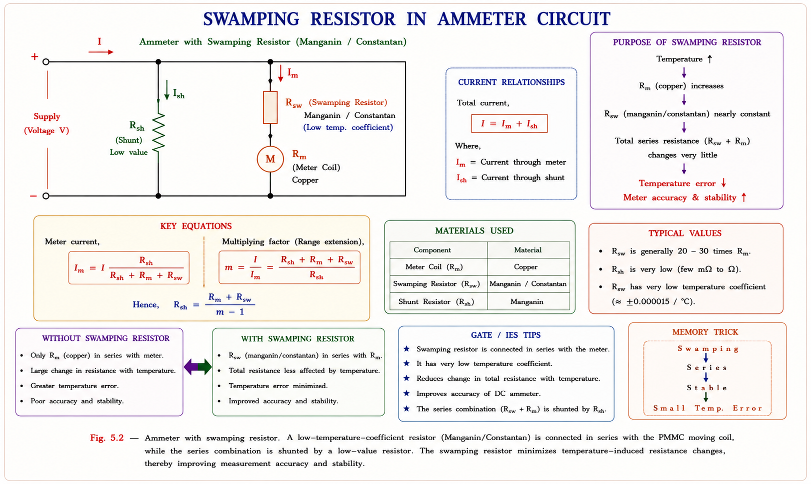
Over time, a permanent magnet gradually loses its flux density due to mechanical vibration, temperature cycles, and self-demagnetisation. This causes the sensitivity to decrease — the instrument reads low. The solution is to artificially age (stabilise) the magnet during manufacture by deliberately exposing it to vibration and temperature cycles before calibration. Modern Alnico and ferrite magnets are very stable.[1]
Since the PMMC uses a strong permanent magnet, external stray magnetic fields have relatively little effect — the instrument's own field dominates. The PMMC is inherently well-shielded from external field interference. This is a significant advantage over Moving Iron instruments.[1]
Moving Iron instruments work on the principle that an iron vane placed in a magnetic field experiences a deflecting torque regardless of current direction — making them naturally suited for both AC and DC. However, the presence of iron in the magnetic circuit introduces a richer set of errors compared to PMMC.[1]
Deflecting torque \(T_d = \frac{1}{2}I^2 \frac{dL}{d\theta}\) where L is the self-inductance of the coil, which varies with deflection angle θ. Since \(T_d \propto I^2\), the deflection \(\theta \propto I^2\), giving a non-uniform (squared) scale — cramped at the low end, open at the high end.
| Error Type | PMMC | Moving Iron (MI) | Reason for Difference |
|---|---|---|---|
| Frictional Error | Less (light coil, high torque) | More (heavier iron vane, lower torque) | MC weight vs. MI weight; torque/weight ratio |
| Temperature Error | Moderate (spring + coil resistance) | More (spring + coil resistance + iron permeability) | Additional factor: μ of iron changes with T |
| Frequency Error | None (used for DC only) | Present (eddy current, skin effect, inductance change) | MC uses no iron; MI has iron core |
| Stray Magnetic Field | Less (strong permanent magnet dominates) | More (weak electromagnet, easily distorted) | External field comparable to MI's own field |
| Hysteresis Error | None (no iron in moving system) | Present (iron B-H hysteresis loop) | MC permanent magnet vs. MI soft iron |
| Eddy Current Error | Low (no bulk iron, eddy current damping disc only) | Present (proportional to f²) | Iron vane supports eddy currents |
| Scale | Uniform (θ ∝ I) | Non-uniform (θ ∝ I²) | Linear vs. square-law response |
When the supply frequency changes from the frequency at which the instrument was calibrated, the reading changes even for the same RMS current. Two mechanisms cause this:[1]
MI instruments use a relatively weak electromagnetic field (produced by the current in the fixed coil). External stray magnetic fields of comparable magnitude can distort the internal operating field, causing significant errors. Key points:[1]
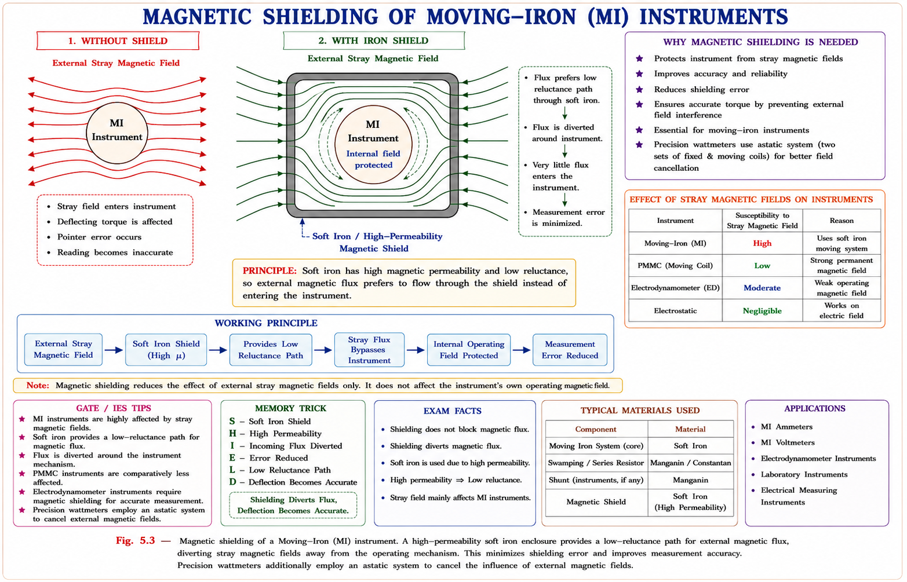
The iron vane's B-H characteristic is not perfectly reversible — the flux density at a given field intensity is higher on the decreasing path than on the increasing path. This causes the instrument to give different readings for the same current depending on whether it was previously higher or lower.[1]
Alternating current flowing in the fixed coil induces eddy currents in the iron vane. These eddy currents:[1]
The Electrodynamometer type instrument has two coils — a fixed coil (current coil, CC) and a moving coil (potential coil, PC). The interaction between the magnetic fields of these two coils produces the deflecting torque. Because it uses air core for both coils, it avoids several iron-related errors but introduces its own unique error sources.[1]
Deflecting torque \(T_d = I_1 I_2 \cos\phi \cdot \frac{dM}{d\theta}\) where M is the mutual inductance between fixed and moving coils, I₁ = current coil current, I₂ = voltage coil current, and φ = angle between them. For a wattmeter: T_d ∝ VI cosφ = Active Power. Note: cosφ here is not the load power factor — it is the cosine of the angle between coil axes.
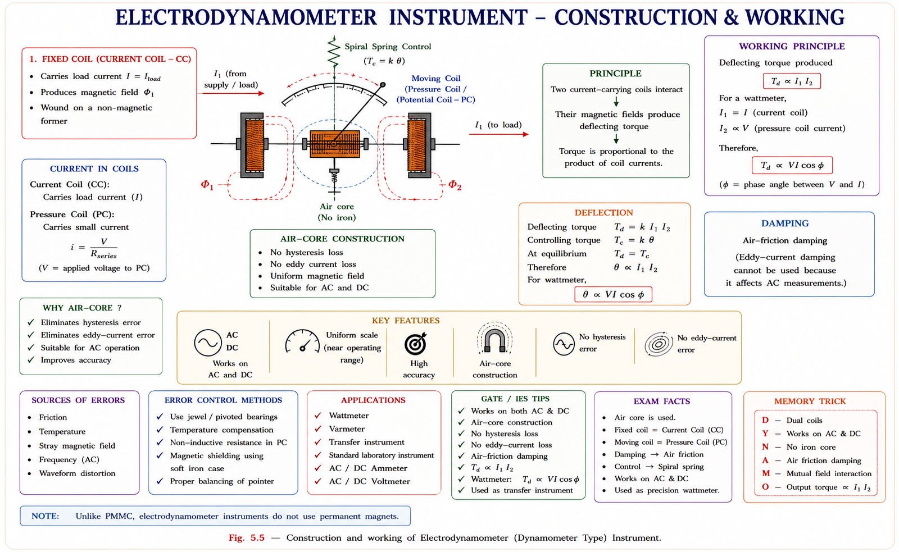
Because the potential coil (voltage coil) in the dynamometer has many turns, it is considerably heavier than either the PMMC coil or the MI iron vane. A heavier moving system requires higher torque to overcome pivot friction. Additionally, the springs carry current (unlike the MI instrument), requiring more robust spring construction — adding further weight.[1]
Among the three instrument types: Dynamometer > Moving Iron > PMMC in terms of frictional error. The dynamometer has the highest frictional error because its moving coil is the heaviest. The PMMC has the lowest because its lightweight aluminium coil gives an excellent torque-to-weight ratio.
The dynamometer has two coils dissipating power, and since both carry significant currents, the total heat developed is greater than in PMMC or MI. This greater temperature rise causes larger drift in spring constants and resistance values, leading to greater temperature error overall.[1]
When used as a voltmeter or ammeter, the dynamometer's net inductance is significant, causing appreciable frequency error. However, when used as a wattmeter, the inductance of the current coil is kept very low (thick conductors, few turns), and the series resistance R_s in the voltage circuit is very large (kΩ range), making the inductive reactance ωL_p ≪ R_s. Frequency error in the wattmeter configuration is therefore very small.[1]
Both fixed and moving coils are air-core electromagnets producing a relatively weak field. An external stray field of comparable magnitude can easily distort the instrument's internal operating field, causing significant deflection errors.[1]
When a dynamometer wattmeter is connected to measure load power, the instrument itself consumes some power — creating a systematic measurement error. There are two ways to connect the wattmeter, each with its own error characteristics.[1]
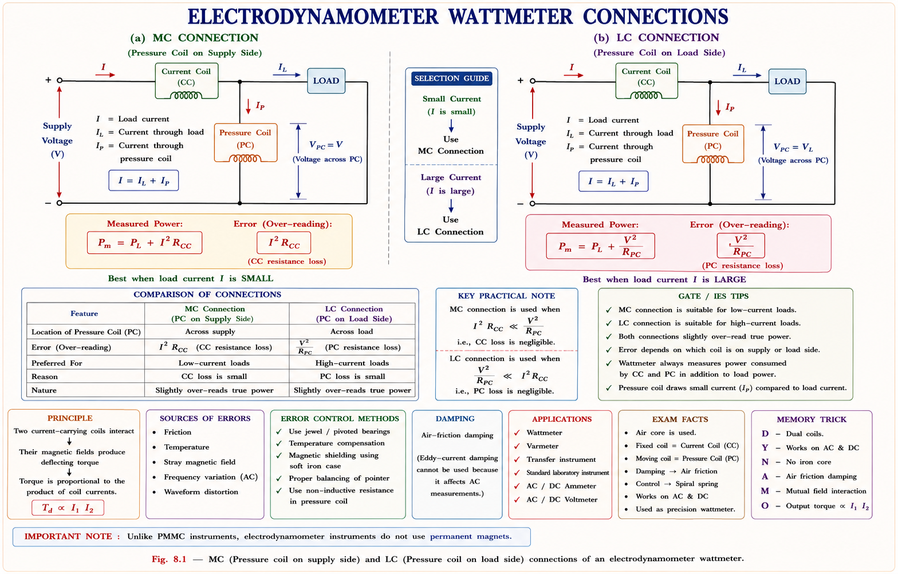
| Parameter | MC Connection (PC on supply side) | LC Connection (PC on load side) |
|---|---|---|
| What is measured | P_load + power in CC (I²r_cc) | P_load + power in PC (V²/R_s) |
| Error formula | \(P_m - P_T = I_1^2 \cdot r_{cc}\) | \(P_m - P_T = V^2/R_s = I_2^2 R_s\) |
| Error is minimum when | Load current I is small | Load current I is large |
| Preferred for | Low current, high impedance loads | High current, low impedance loads |
| Correction | Subtract I²r_cc from reading | Subtract V²/R_s from reading |
The potential coil has a small but nonzero inductance L_p even though a large series resistance R_s is connected. This causes the current I₂ in the potential coil to lag the voltage V by a small phase angle β:[1]
Since the error ∝ tanφ · tanβ, the error is maximum at low power factor and minimum at unity power factor. A standard unity p.f. wattmeter has a large error when measuring loads with power factor between 0.2–0.4 (e.g., transformer no-load test). Correction: Connect compensating capacitor C_c ≈ L_p/R_s² in parallel with the series resistance R_s to cancel the inductance effect.
Standard wattmeters cannot accurately measure power at low power factors (0.1 to 0.5). This situation arises in transformer no-load tests and induction motor no-load tests where the power factor is between 0.1 and 0.3. A specially designed LPF wattmeter is needed.[1]
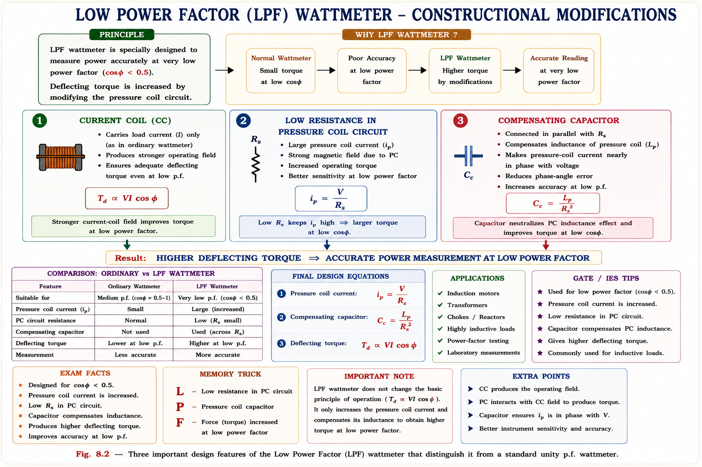
In the LC connection, the current coil carries both the load current I and the potential coil current I₂ = I − I₁. The magnetic flux of I₂ linking with the potential coil induces a small back-EMF, causing additional power measurement error. A compensation coil (equal turns, connected in series opposition) cancels this effect — but only for the LC connection.[1]
Explanation: In a dynamometer, both the current coil (I₁²R_cc) and potential coil (I₂²R_pc + I₂²R_s) dissipate power. Since R_s is kept very large (kΩ) for voltage measurement, the total power consumed is highest. The PMMC has no iron losses and only the moving coil resistance. The MI has iron losses but the coil resistance is small.
The error = tanφ · tanβ × 100%. Since β is fixed by the wattmeter design, the error varies with the load power factor φ. At zero power factor (φ = 90°), tanφ → ∞, and the error is maximum. At unity power factor (φ = 0), tanφ = 0, and the error is zero. This is why standard wattmeters cannot accurately measure power at low power factors and why LPF wattmeters are needed.
For a 50 Hz wattmeter with reactance 1% of its resistance: tanβ = X_p/r_p = 0.01. At p.f. = 0.8 (φ = 36.87°, tanφ = 0.75): % error = ±(0.75 × 0.01) × 100 = ±0.75%.
Explanation: Eddy current magnitude ∝ f (from Faraday's law). Eddy current loss (and hence its error effect) ∝ f². At high frequencies, skin effect reduces the penetration depth, and the error tends toward a constant. This f² dependence limits MI instruments to a maximum frequency of 125 Hz for acceptable accuracy.
Ranking (Most to Least): Dynamometer > Moving Iron > PMMC
Dynamometer has the highest stray field error: Both coils are air-core, producing a weak internal field. External stray fields are comparable in magnitude and easily distort the operating field. Remedy: iron shielding or astatic system.
Moving Iron has moderate stray field error: The internal field is electromagnetic (weak), making it susceptible. Remedy: iron shielding around the instrument.
PMMC has the least stray field error: The strong permanent magnet produces a large radial field that dominates any external stray field. The radial field geometry also ensures that non-uniform external fields average out over the coil.
A transfer instrument gives the same reading (within calibration uncertainty) when used on both AC and DC for the same RMS value of the measurand. The dynamometer instrument qualifies because it uses air-core coils — there are no iron-related frequency-dependent effects. The torque T_d = I₁I₂ cos(angle) · dM/dθ depends only on the product of the two RMS currents (for AC at power frequency) and is independent of whether the supply is AC or DC.
The dynamometer is thus the working standard instrument for calibrating ammeters, voltmeters, and wattmeters at power frequencies. For very high frequencies, thermocouple instruments serve as transfer standards.
For a wattmeter with potential coil inductance β: for lagging load (inductive, φ > 0), the wattmeter reads more than actual (error is positive / +ve). For leading load (capacitive), the wattmeter reads less than actual (error is negative / −ve). Remember: lag → over-read; lead → under-read.
"Dynamo is the Fierce Tiger; MI is a Moderate Wolf; PMMC is a Calm Panda"
Fierce Tiger (Dynamometer): Highest Frictional error, Highest Temperature error, Highest Stray
field error.
Moderate Wolf (Moving Iron): Moderate errors + unique ones (Frequency, Hysteresis, Eddy
current).
Calm Panda (PMMC): Lowest frictional error, manageable temperature error, nearly immune to stray
fields and hysteresis.
"FRESH-E" = Friction · Resistance-temperature · Eddy current · Stray field · Hysteresis · Error-frequency. These are all six major error sources of the Moving Iron instrument. PMMC lacks the last three (E, S, H) because it has no iron.
"Small current → MC; Large current → LC"
MC (Measured on the Current coil side / PC on supply side): Error = I²r_cc → large when I is
large → use MC for small currents.
LC (PC on Load side): Error = V²/R_s → fixed for a given voltage, independent of load current →
use LC for large currents.
"PAVE" = Pneumatic (air friction) damping — used in dynamometer instruments; Air friction — same as pneumatic; Viscous fluid — in some laboratory instruments; Eddy current — in PMMC (aluminium former in the permanent magnet field produces damping eddy currents automatically). PMMC is self-damping; others need an explicit damping mechanism.
"CLC" = CC carries both, Low R_s, Compensating capacitor. These are the three distinguishing features of an LPF wattmeter compared to a standard UPF wattmeter. When asked "what makes an LPF wattmeter special?" — recall CLC.
Absolute error \(e = A_m - A_t\). Relative error \(e_r = e/A_t\). Accuracy = 1 − |e_r|. Precision ≠ Accuracy. Systematic errors → calibration. Random errors → averaging. Gross errors → care.
Sensitivity S = dθ/dQ. Scale range, span, FSD. Hysteresis = different output up vs. down path. Dead zone = range with no response. Accuracy class = % FSD (0.1 to 5.0).
Governing ODE: \(J\ddot{\theta} + D\dot{\theta} + K\theta = T_d\). Damping ratio ζ = D/2√(JK). ζ ≈ 0.65 is optimal (fastest settling within ±2%). Dynamic error = reading − true instantaneous value.
Low friction (light coil). Temperature: spring weakens → reads high; coil resistance rises → reads low. Remedy: swamping resistor (Manganin/DC, Constantan/AC) = 30–40× R_m. Magnet ageing → stabilise before calibration. Nearly immune to stray fields & hysteresis.
Friction > PMMC. Frequency error (eddy ∝ f², suitable ≤125 Hz). Stray field more than PMMC. Hysteresis error — use Nickel-Iron alloy. Temperature > PMMC (iron permeability changes). Scale: non-uniform (θ ∝ I²).
Friction highest (heavy PC). Temperature highest (two coils). Stray field highest (air core, weak field) → iron shielding or astatic system. Hysteresis ≈ zero (air core). Eddy current ≈ zero (air core). Transfer instrument: same reading AC/DC.
MC: error = I²r_cc, use for small I. LC: error = V²/R_s, use for large I. PC inductance error: % err = ±tanφ·tanβ·100%. Max error at low p.f. (tanφ large). Lag load: reads high (+ve error). Lead load: reads low (−ve error).
For p.f. = 0.1–0.5 measurements. Design: (1) CC carries I₁+I₂; (2) Low R_s for adequate I₂; (3) Compensating capacitor C_c ≈ L_p/R_s² to cancel β. Used in transformer/motor no-load tests.
\(T_d^{PMMC} = BANI\) · \(T_d^{MI} = \frac{1}{2}I^2\frac{dL}{d\theta}\) · \(T_d^{EMMC} = I_1I_2\cos\phi\frac{dM}{d\theta}\) · \(\% err_{PC} = \pm\tan\phi\tan\beta \times 100\) · \(C_c = L_p/R_s^2\)
Have a question on instrument errors, wattmeter connections, temperature compensation, or dynamic response? Type below or pick a suggestion.
PSU interviews (NTPC, PGCIL, BHEL) frequently ask: (1) Why is a PMMC not used for AC measurements directly? (2) What is the function of a swamping resistor? (3) Explain why a wattmeter over-reads at lagging power factor. (4) What is the difference between an LPF wattmeter and a UPF wattmeter? (5) How do you choose between MC and LC wattmeter connections? (6) What material is used for the vane in MI instruments and why?
AC Bridges — Wheatstone, Maxwell, Hay, Schering, and Wien bridges; balance conditions, Q-factor measurement, and frequency determination. Complete GATE and ESE concepts with numerical examples.
All technical content is derived from the following standard textbooks. No content is reproduced verbatim — all explanations, derivations, and diagrams are original educational material created for this resource.